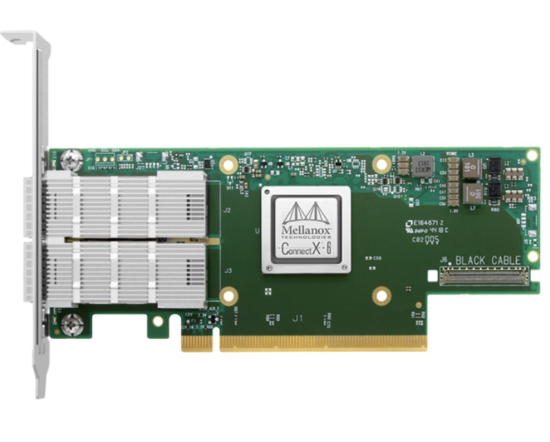

Tunable Communication for Distributed Systems
(Spring 2025 - Present)
At Brown, I am building a communication layer for distributed
systems. This system has two main contributions:
|
|
|  |
RDMA Data Structures(Fall 2023 - Summer 2024) In my undergraduate, I built concurrent data structures using one-sided RDMA. In total, I implemented three novel designs of a B+Tree, skiplist, and an IHT (Inter-locked hashtable). I also designed a software-cache for one-sided RDMA that enabled a high-performance design by optimizing the read-heavy traversals of the tree-like indexes in the B+Tree, skiplist, and IHT. |